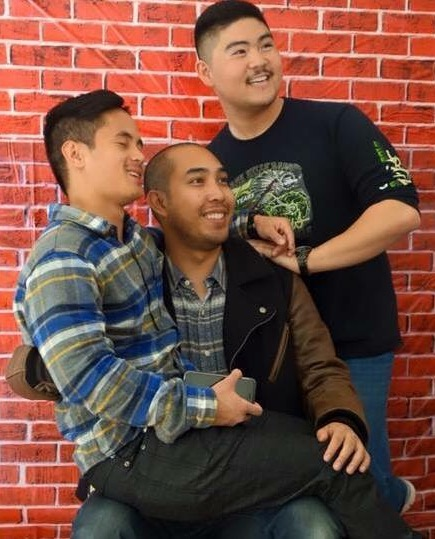

Hello! I am Erik Tolentino!
(that's me)
This is a Corgi with it's face in bread:

So derp. Much wow
(that's me)
So derp. Much wow
My name is Erik Tolentino. I'm 25 years old and from San Diego, CA! I moved here at the end of December specifically to attend Epicodus! I have a 7 year old corgi who is very dear to me, but unfortunately had to stay in San Diego. At least for the duration of this program. 5 months go by faster!!!
I have a degree in Kinesiology as I originally wanted to become a Physical Therapist. Long story short, I had a major change of heart and a years worth of soul searching, heard about coding bootcamps, found Epicodus and here I am today! It has been a week so far into the program and I am really enjoying it!
Below are a few of the incredibly basic pages I've made in the first week
This is the first page that I created along with my partner for the day, Polina. In it you will find a few lists of our favorite things. Some of the items are clickable as well, and will link you to another page. The page is really rugged and messy, but this was made on just the second day! The page was made with HTML and utilizes basic elements such as ul, p, and h tags. Basic CSS was used to style things like color, font-size, font-family, etc.
Click!This is the second page I created along with my parter, Jason. It was made on the third day of class. While it's still a little rugged looking, it contains a lot more code than the first days page. As far as HTML goes, this page now includes divs and classes, spans, and sidebars, and wraps. With CSS, we learned and applied new elements such as setting widths, floats, borders, setting heights, margins, etc.
Click!This is the last page I created, along with Jacob, before starting this project. We made it on the fourth day of class (we're on day 5 as of typing this). It utilizes HTML and CSS like the pages before, but now we included the power of Bootstrap. Bootstrap is amazing and I love it. We included a carousel as well. This is by far our most advanced page. It still is visually unappealing, but it's what's on the inside that counts.
Click!